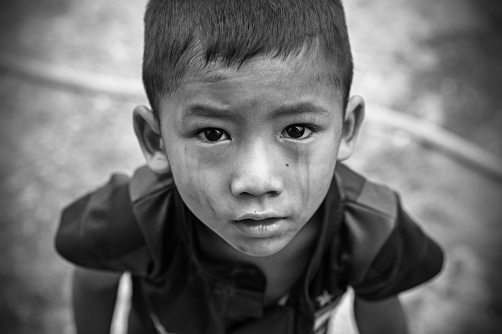
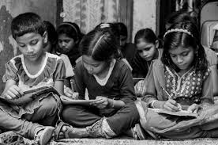

NGOs (Non-Governmental Organizations) have evolved significantly over time. Early forms date back to religious institutions and charitable groups that provided aid and education. In the 19th century, movements like the Anti-Slavery Society and the creation of the International Red Cross marked the rise of organized humanitarian efforts. By the 20th century, NGOs expanded globally, addressing social, environmental, and political issues, with significant growth following World War II and the establishment of the United Nations. During the Cold War and decolonization, many NGOs emerged to support peace, human rights, and development in newly independent nations. In the digital era, NGOs harnessed the power of technology to amplify their reach and advocacy, becoming key players in addressing global challenges like climate change, poverty, and health through initiatives like the UN’s Sustainable Development Goals. Today, they are vital in promoting social justice, transparency, and international cooperation.
“Our most vulnerable youth continue to be at the core of what we have focused upon since our partnership with youthSpark began, making strides to serve them in ways that we had not considered in the past.”
Hope for Change is a dedicated non-profit organization with a mission to uplift and transform the lives of individuals and communities in need. Our primary goal is to provide basic necessities such as food, clean water, shelter, and healthcare to those who are most vulnerable. We believe that by meeting these essential needs, we can pave the way for brighter futures and stronger, more resilient communities.
Our efforts are aimed at combating poverty and social isolation while reigniting hope for a better future. We believe that everyone has the right to equal access to the resources and opportunities needed for a dignified life and full participation in society. Our dream is a world without starvation, hunger, or poverty, and we are dedicated to making that vision a reality.
With your participation, we aspire to uplift humanity by enhancing the well-being of all, including humans, animals, and the environment. Together, we can address imbalances in society by empowering underprivileged individuals and guiding them toward a world characterized by equality, dignity, and respect.